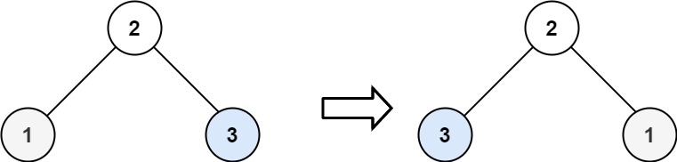

books / hot100 / 03-题解 / 08-二叉树
226. 翻转二叉树
| 题目信息 | 内容 |
|---|---|
| 难度 | 简单 |
| 核心模式 | 递归交换左右子树 |
| 时间复杂度 | O(n) |
| 空间复杂度 | O(h) |
题目与约束
给你一棵二叉树的根节点 root ，翻转这棵二叉树，并返回其根节点。
示例 1：

输入：root = [4,2,7,1,3,6,9]
输出：[4,7,2,9,6,3,1]
示例 2：

输入：root = [2,1,3]
输出：[2,3,1]
示例 3：
输入：root = []
输出：[]
提示：
- 树中节点数目范围在
[0, 100]内 -100 <= Node.val <= 100
核心不变量
每个节点只做一件事：交换左右孩子。
完整推导
思路推导
这道题最适合训练“递归函数只负责当前节点”的思维：
- 空节点无需处理，直接返回。
- 当前节点交换
left与right。 - 对交换后的左右子树继续做同样的事情。
先交换再递归、先递归再交换都能得到正确结果；关键是整棵树的每个节点都恰好被处理一次。
Java 实现
class Solution {
public TreeNode invertTree(TreeNode root) {
if (root == null) {
return null;
}
TreeNode temp = root.left;
root.left = root.right;
root.right = temp;
invertTree(root.left);
invertTree(root.right);
return root;
}
}
复杂度
- 时间复杂度：
O(n)，每个节点访问一次。 - 空间复杂度：
O(h)，递归栈深度等于树高；退化链表时最坏为O(n)。
易错点与扩展
- 交换的是节点引用，而不是节点值。
- 不要只交换根节点；左右子树也必须递归处理。
- 迭代写法可使用队列做 BFS：节点出队后交换孩子，再把非空孩子入队。